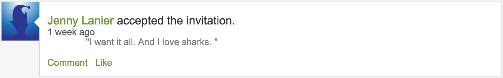

Tweets by @TheAverageShark
I was going to get you everything, as you requested.

But on the account of not being paid...
I went with sharks
But all of the shark shit I found was lame or over $10
So this will have to do
Hope you enjoy it
Happy Valentine's Day <3 Lawrence